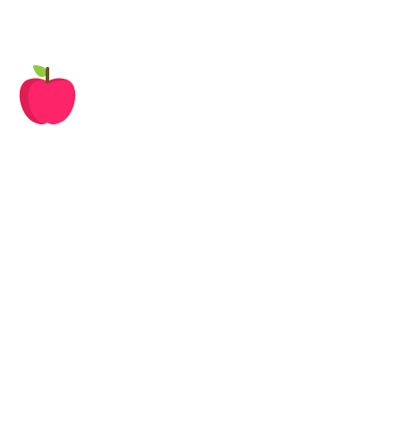

<div id="main">
    <!-- REMARCAR LA FIGURA -->
    <figure id=figura appStyleGetter [height]="height" [width]="width">
        <map name=recortes id=recortes>
              <!--A1-->
              <area shape="circle"
              [attr.coords]="mapCoorManzana" class="grab">
              <!--A2-->
              <area shape=poly 
              coords={{mapCoorEFGH}} >
          <!--A3-->
              <area shape=poly 
              coords={{mapCoorIJKL}}>
          <!--A4-->        
              <area shape=poly 
              coords={{mapCoorMNOP}}>
      
          
      
          <!--IMPORTANTE CAPA ARRIBA CUANDO SE SELECIONA ALGO-->
        
        </map>

          <!--USA EL MAPS: ES TRANSPARENTE-->
                <!-- CON ESTO NO FUNCIONA LO DE REMARCAR -->
                

                <!--manzana-->
                
      
      </figure>
      
      <!-- AREA DE LA FIGURA -->
      <svg xmlns="http://www.w3.org/2000/svg" version="1.1" >
          <defs>
              <!--manzana-->
              <clipPath id=A1>
                  <circle [attr.points]="mapCoorManzana"></circle>
              </clipPath>
              <clipPath id=A2>
                  <polygon [attr.points]="mapCoorEFGH" ></polygon>
              </clipPath>
              <clipPath id=A3>
                  <polygon [attr.points]="mapCoorIJKL" ></polygon>
              </clipPath>
              <clipPath id=A4>
                  <polygon [attr.points]="mapCoorMNOP" ></polygon>
              </clipPath>
              
               
          </defs>
      </svg>
</div>